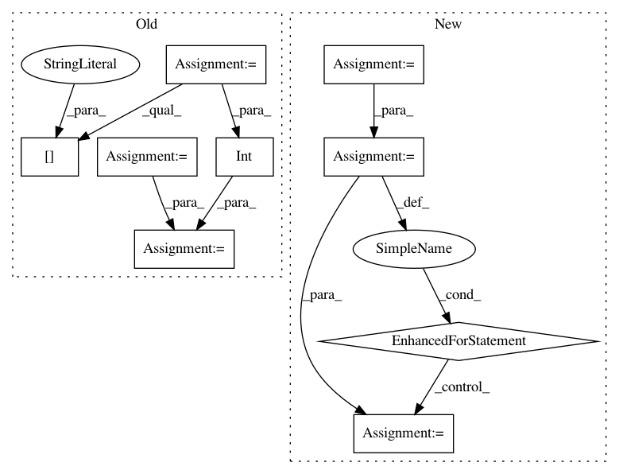

36dd7cf04dcd4e71ca4e1a0086713c51759fd42d,plot_poldrack_space_net.py,,,#,7
Before Change
import os
import sys
sys.path.append(
os.path.join(os.environ["HOME"], "CODE/FORKED/parietal-python"))
from examples.proximal.load_data import load_gain_poldrack
mem = Memory(cachedir="cache", verbose=3)
X, y, _, mask, affine = mem.cache(load_gain_poldrack)(smooth=0)
img_data = np.zeros(list(mask.shape) + [len(X)])
img_data[mask, :] = X.T
// prepare input data for learner
import nibabel
mask_img = nibabel.Nifti1Image(mask.astype(np.int), affine)
X_train = nibabel.Nifti1Image(img_data, affine)
y_train = y
////// Fit and predict ////////////////////////////////////////////////////////////////////////////////////////////////////////////////////
from nilearn.decoding import SpaceNetRegressor
penalty = "TV-L1"
l1_ratio = .3
alpha = None
decoder = SpaceNetRegressor(memory=mem, mask=mask_img, verbose=2,
n_jobs=int(os.environ.get("N_JOBS", 1)),
l1_ratio=l1_ratio, penalty=penalty, alpha=alpha)
decoder.fit(X_train, y_train) // fit
coef_niimg = decoder.coef_img_
coef_niimg.to_filename("poldrack_%s(l1_ratio=%g, alpha=%s)_weights.nii" % (
penalty, l1_ratio, alpha))
After Change
////// Fit and predict ////////////////////////////////////////////////////////////////////////////////////////////////////////////////////
from nilearn.decoding import SpaceNetRegressor
penalties = ["Smooth-LASSO", "TV-L1"]
decoders = {}
for penalty in penalties:
decoder = SpaceNetRegressor(memory=mem, mask=mask_img, verbose=2,
penalty=penalty)
decoder.fit(X_train, y_train) // fit
decoders[penalty] = decoder
////// Visualization //////////////////////////////////////////////////////////////////////////////////////////////////////////////////////////
import matplotlib.pyplot as plt
from nilearn.image import mean_img
from nilearn.plotting import plot_stat_map
background_img = mean_img(X_train)
In pattern: SUPERPATTERN
Frequency: 5
Non-data size: 9
Instances
Project Name: nilearn/nilearn
Commit Name: 36dd7cf04dcd4e71ca4e1a0086713c51759fd42d
Time: 2015-07-28
Author: elvis.dohmatob@inria.fr
File Name: plot_poldrack_space_net.py
Class Name:
Method Name:
Project Name: YerevaNN/mimic3-benchmarks
Commit Name: 5d353701dd56a1fc8abc15e4082e33b7bed2a241
Time: 2017-08-09
Author: harhro@gmail.com
File Name: mimic3models/split_train_val.py
Class Name:
Method Name:
Project Name: YerevaNN/mimic3-benchmarks
Commit Name: 7567cc646d258e40dde9790a28a9b264ccd494fb
Time: 2017-08-27
Author: harhro@gmail.com
File Name: mimic3models/split_train_val.py
Class Name:
Method Name:
Project Name: catalyst-cooperative/pudl
Commit Name: f967bd87424bbc50f475d5959994a5743ae2af0e
Time: 2019-12-28
Author: zane.selvans@catalyst.coop
File Name: src/pudl/convert/epacems_to_parquet.py
Class Name:
Method Name: epacems_to_parquet
Project Name: nilearn/nilearn
Commit Name: 986aacd1c7ed2f7000cc9816057f96d59701e066
Time: 2015-07-28
Author: elvis.dohmatob@inria.fr
File Name: plot_poldrack_space_net.py
Class Name:
Method Name: